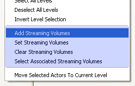
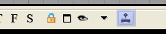
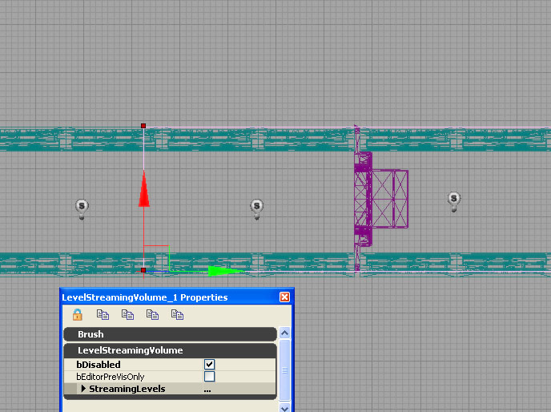

Level Streaming Volumes
Overview
This document contains an overview of how to use volume-based level streaming. It assumes the reader is already familiar with the basics of level streaming described in the Level Streaming How-To.
Level streaming volumes make controlling level streaming very easy. The idea is simple: load/unload requests for a streaming level are issued based on whether the viewpoint is inside any of the LevelStreamingVolume volumes associated with a level.
Specifically, level streaming volumes can be used in two ways:
- In the game, level streaming volumes cause levels to load when the player is inside the volume and unload when the player is outside the volume.
- In the editor, level streaming volumes can be used to preview level streaming by automatically hiding/unhiding levels based on the location of the perspective viewport's camera.
Volume-based level streaming is simple to use and does not require any Kismet scripting, making it an ideal way to control level streaming. Furthermore, volume-based level streaming is much easier to maintain than scripted streaming: when demands on the loading system change, level loading/unloading behaviour can be modified by simply resizing the streaming volumes.
Associating Streaming Volumes With Levels
Volume-based level streaming works as follows: each streaming level can have associated with it a set of volumes of type LevelStreamingVolume. Each frame, the engine iterates over each level and checks to see if the player viewpoint is inside any of the LevelStreamingVolumes associated with that level. If the viewpoint is inside at least one LevelStreamingVolume, a request is issued to begin loading that level. If the viewpoint is outside all LevelStreamingVolumes, the level is marked for unloading.
To associate streaming volumes with a level:
- Drop a LevelStreamingVolume in the Persistent Level (as you would any other volume by using the "Add Volume" button on the main editor toolbar);
- Select the level(s) to associate with this volume in the Level Browser, right-click to bring up the Level Browser context menu, and select "Add Streaming Volumes".
That's it!
The full list of LevelStreamingVolume operations appearing in the Level Browser context menu is as follows:

- Add Streaming Volumes: Adds to the level(s)'s volumes, retaining any existing associations.
- Set Streaming Volumes: Sets the level(s)'s volumes to be exactly the selected volumes, destroying any existing associations.
- Clear Streaming Volumes: Clears all streaming volume associations from the selected level(s).
- Select Associated Streaming Volumes: Selects all volumes associated with the selected level(s).
Since it's easy for streaming volumes to clutter the view, LevelStreamingVolumes are only visible for levels that are 1) visible; and 2) selected in the level browser. So, if you deselect the level you've just associated that volume with, you'll see the volume disappear in the editor viewports. Selecting the level again in the Level Browser will cause the associated volumes to reappear.
Important Details
- All LevelStreamingVolumes must exist in the persistent level. LevelStreamingVolumes that live in other levels cannot be used for level streaming, and will generate warnings when the map is checked for errors.
- Only levels that were added to the world using the "Kismet" streaming method can use volume-based level streaming.
- If a level has any streaming volumes associated with it, other methods of streaming the level (ie distance streaming or kismet streaming) will not behave correctly.
- A single LevelStreamingVolume can affect multiple levels. Similarly, a single level can be affected by multiple LevelStreamingVolumes.
- Volume-based streaming works for split screen. The viewpoints of all local players are considered before any loading/unloading requests are issued.
Testing Your Streaming Volume Setup
It is critical that volume-based level streaming be tested in game on the target platform. Streaming in "Play in Editor" (PIE) will show where the loads/unloads will happen, but streaming in PIE is not representative of real, in-game loading-unloading. This is because in PIE, the levels are already in memory, and so "loading" a level is simply a matter of unhiding it and is thus instantaneous.
Running the level in the standalone game on the target platform is critical in making sure your streaming setups work. Note that on some platforms, it can take several seconds to stream in a level. Size your LevelStreamingVolumes appropriately, so that the level is loaded by the time the player can reach it. Level loading behaviour can be modified by resizing the LevelStreamingVolumes associated with a level. Growing a volume causes associated levels to load sooner and unload later, while shrinking a volume causes later loads and earlier unloads.
Level Streaming Volumes for Previs

Volume-based level streaming can be easily previewed by enabling the "Level Streaming Volume Previs" button on the perspective viewport toolbar. When this mode is enabled, levels will be hide/unhide based on the location of the perspective viewport camera. Note that this hiding/unhiding will affect the set of visible levels in the Level Browser.
A LevelStreamingVolume can be marked for editor previs only by setting the bEditorPreVisOnly flag on the LevelStreamingVolume. In this manner, volume-based level streaming can still be used for editor previs while at the same time using another streaming method for in-game streaming.
Cost of Level Streaming Volumes
Each frame, UWorld::ProcessLevelStreamingVolumes iterates over each streaming level and for each level, that level will begin loading if any local player is within any of the volumes associated with that level. Likewise, the level will be begin unloading if all local players are outside all volumes.
UWorld::ProcessLevelStreamingVolumes exploits coherency in the following manner: for each level, the volume that most recently contained a player is cached. This cached volume is checked first, so that levels a player is in or returns to are quickly accepted.
Volumes of any shape are fine, although obivously the fewer the better. An upper bound on the cost of level streaming volumes can be approximated by the sum of the number of level streaming volumes associated with unloaded levels.
Two stats exist under the "Streaming" stats group for monitoring level streaming performance. The "Streaming Volumes" stat tracks the number of LevelStreamingVolumes tested against player viewpoints per frame, while the "Volume Streaming Tick" stat tracks the amount of time spent in UWorld::ProcessLevelStreamingVolumes per frame.
Adding Hysteresis to Unloading Requests
A player moving back and forth across a LevelStreamingVolume boundary causes spurious load/unload requests to be issued. To address this, hysteresis has been added to unloading requests. No hysteresis exists for loading requests, because if a level needs to be loaded, we always want it loaded ASAP.
The amount of unloading hystersis can be adjusted by modifying the MinTimeBetweenVolumeUnloadRequests property of the LevelStreaming object (LevelStreaming properties can be accessed from the Level Browser context menu). The default unloading hysteresis is 2.0 seconds.
Disabling Level Streaming Volumes
There is a property on LevelStreamingVolumes called bDisabled. When set to TRUE, the volume will be ignored by the streaming volume code, both in-game and in the editor. bDisabled can be used to disable a LevelStreamingVolume without disassociating it from the level. Also, bDisabled can be toggled in-game via the Toggle Kismet action to toggle the control of a level's streaming between Kismet and volume streaming. Note that toggling between Kismet and volume-based streaming is dangerous and error-prone, and should be used only when necessary.
As an example of where the bDisabled flag is useful, imagine a door leading to a level whose streaming is controlled with streaming volumes.

In the image above, the player approaches from the left, and the level to stream in is on the right side of the door. The streaming volume extends leftwards out past the door, so that the level will be streamed in by the time the player can reach the door and open it. Initially, however the door is locked, and will become unlocked when the player achieves an objective in another part of the map. So, even though the streaming volume extends past the door, we don't want the level on the other side of the door to stream in unless the door is actually unlocked ("openable").
The way to achieve this is to mark the level streaming volume as bDisabled in the editor, and then in the Kismet use the Toggle action to set bDisabled to FALSE on this object when the objective is reached. In this way, the LevelStreamingVolume will "turn on" and the level will stream in when the player approaches the door.
Important!
You are viewing documentation for the Unreal Development Kit (UDK).
If you are looking for the Unreal Engine 4 documentation, please visit the Unreal Engine 4 Documentation site.